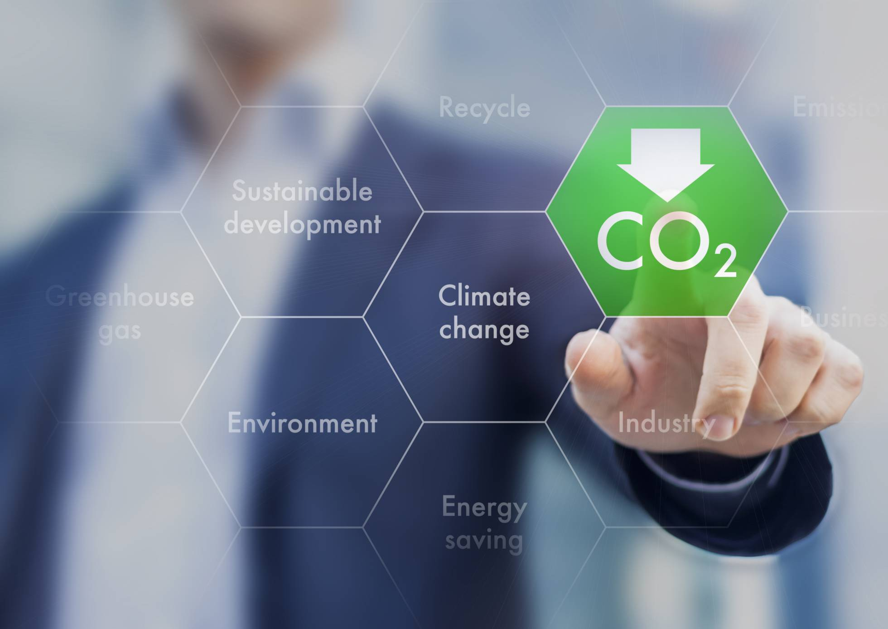

Los que luchan contra el cambio climático(y no son ONG)
Abejas robotizadas, drones submarinos y generadores eólicos que imitan a los árboles, algunas innovaciones para paliar los efectos del calentamiento global
Simarjeet Singh | 28/05/2017 - 09:00 CEST
La Cumbre de París (2016) se cerró con un tratado histórico contra el cambio climático. Los 195 países firmantes,
casi todos los del mundo, adoptaron una alianza para frenar el calentamiento global originado por el ser humano.
Aquellos que lo suscribieron deben reducir las emisiones de gases de efecto invernadero. La parte crucial para el futuro del planeta.
Paralelamente hay quienes investigan vías alternativas y apuestan por manipular el clima y el ecosistema con avanzadas tecnologías para mitigar
sus causas y sus consecuencias.
Innovación al servicio de las energías renovables
El impulso de energías limpias debe ser una máxima para cumplir los objetivos de este acuerdo. Una de las más consolidadas en España es la eólica (segunda fuente de generación eléctrica en 2016, con una producción de 47.319 gigavatio/hora y una cobertura de la demanda del 19,3%).A pesar de este dato, España no cuenta con instalaciones de aerogeneradores en el mar (como sí tienen Reino Unido, Bélgica u Holanda, entre otros). Estos presentan características ventajosas frente a los instalados en tierra: las rachas de viento son mayores y "el impacto paisajístico y acústico es menor. Sin embargo, su evaluación y control es más complejo y costoso", según el Instituto para la Diversificación y Ahorro de la Energía (IDAE).
Otra solución frente al impacto paisajístico de los molinos de viento la propone la empresa francesa NewWind, creadora de Wind Tree: una turbina eólica que se camufla, gracias a su forma, entre los árboles urbanos. Cada hoja, llamada Aerolaf, funciona como un pequeño aerogenerador que, en conjunto con el resto “puede producir electricidad suficiente para proporcionar hasta un 80% de la potencia eléctrica media de un hogar europeo”, tal y como explica la compañía. Las Aeroleaf aprovechan la más mínima brisa de viento y son muy resistentes e independientes, es decir, si una deja de funcionar las demás no se ven afectadas.
Así funciona el árbol artificial con pequeños aerogeneradores. NEWWIND
En España hay varias ciudades que superan las 3.000 horas de sol anuales. Un dato para aprovechar en la generación de una energía limpia. Los aviones no tripulados pueden ser de gran ayuda para incrementar la eficiencia de los huertos de paneles solares. La empresa española Consultoría, Innovación Ingeniería S.L. (Cing) está desarrollando esta innovacion. "Utilizamos un multicóptero [un tipo de dron con varias hélices] con una cámara termográfica radiométrica que mide la temperatura de cada celda fotovoltaica y es capaz de detectar si hay alguna defectuosa. Así puedes ir in situ a solucionar el problema ahorrando en tiempo y dinero", explican desde su departamento de comunicación.